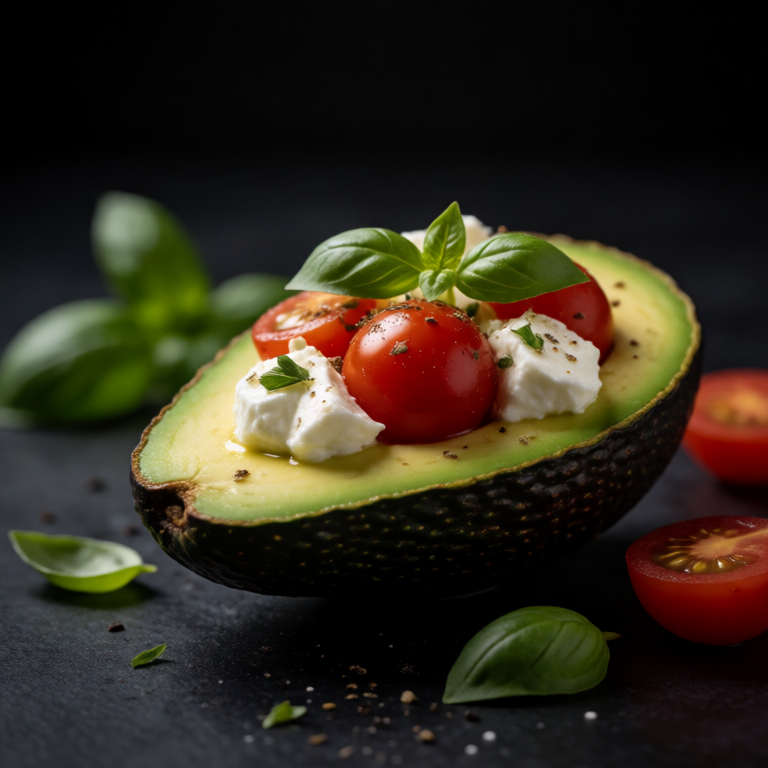

Earthy roasted beets, tangy goat cheese, and candied walnuts. Classic bistro salad.
The method for Roasted Beet and Goat Cheese Salad is mostly tasting. Start with the dressing, add pre cooked beets, and keep enough soft goat cheese in reserve to restore crunch and brightness at the end.
At a Glance
Prep
5m
Cook
0m
Serves
1
Difficulty
Easy
Rate this slopBe the first to rate it.
Ingredients
Method
- 01
Make dressing
Whisk together 1 tbsp balsamic, 2 tbsp olive oil, and 1 tsp dijon. Season.
- 02
Assemble
Dress 2 handfuls of arugula lightly and arrange with 1 pack of sliced beets, 2 tbsp of crumbled goat cheese, and a handful of candied walnuts.
Easy swaps
Greens swap freely by season. Without pre cooked beets, toasted nuts or seeds restore the crunch the salad is counting on.
Storage
Make the components ahead, but do not finish the salad until serving. Refrigerate soft goat cheese separately so the bowl keeps its snap.
Slop Notes
Pre roasted vacuum packed beets are a completely valid shortcut and nearly as good as roasting your own.
Recipe by foidslop · How we create our recipes
The Weekly Slop
Seven dinners for one, one short note, every Sunday. No life story.
One email every Sunday. Unsubscribe whenever. Double opt-in. See the privacy policy.
Keep eating
Related recipes


